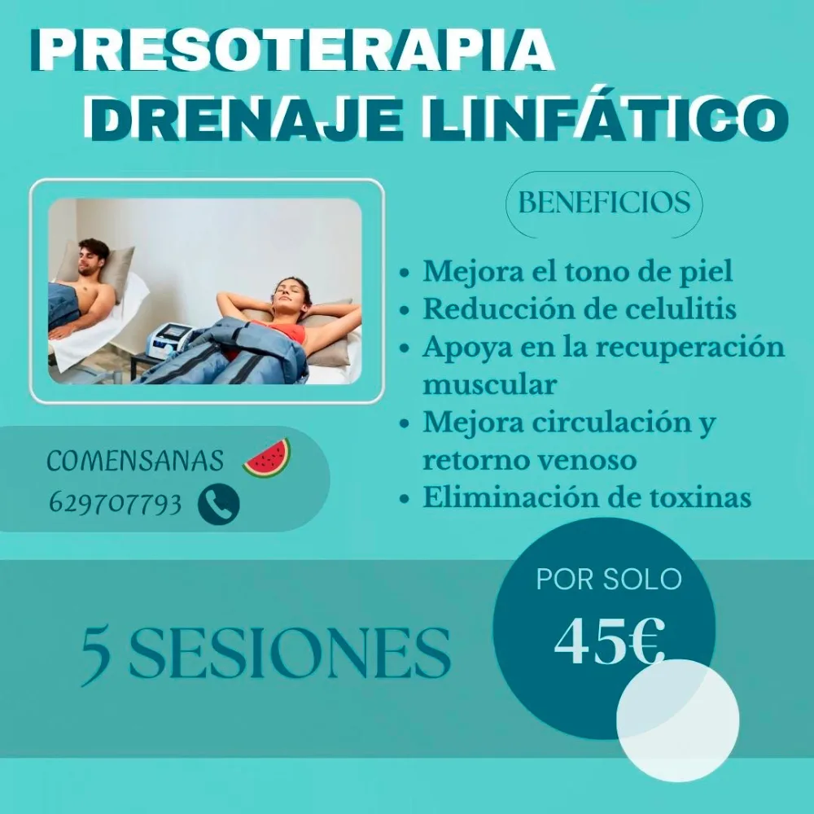
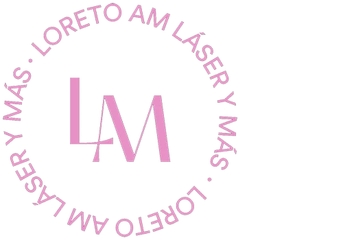
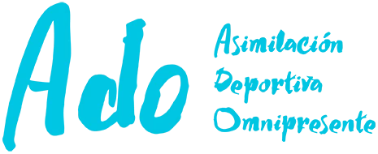
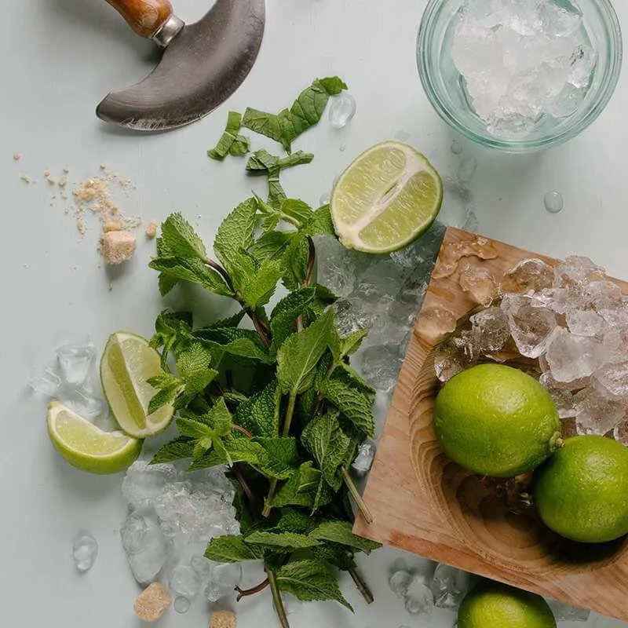

Psiconeuroinmunología
La PNI es el eje de mi práctica: entender la salud desde la conexión entre los sistemas del cuerpo para llegar al origen del problema, no solo al síntoma.
Dietista · Valencia y Llíria
Planes de nutrición hechos a tu medida, con evidencia científica y un trato cercano. Sin dietas milagro, sin restricciones extremas: hábitos que se quedan contigo.
Quién soy
Soy dietista y empecé en el mundo de la nutrición en 2003. Desde entonces he trabajado siempre en consulta privada, acompañando a mis pacientes en pérdida y ganancia de peso, nutrición deportiva, enfermedades inflamatorias, SIBO y mucho más.
Mi forma de trabajar combina la evidencia científica actual con un enfoque humano y empático, y la alimentación consciente como herramienta del día a día.
Reserva tu primera consultaLa PNI es el eje de mi práctica: entender la salud desde la conexión entre los sistemas del cuerpo para llegar al origen del problema, no solo al síntoma.
Crecí entre herboristerías gracias a mis padres. Hoy uno ese conocimiento de lo natural con la ciencia para tratar síntomas concretos.
Congresos y programas especializados para seguir aprendiendo y ofrecer soluciones duraderas a cada paciente.
Consulta
Cada persona es diferente, y su alimentación también debería serlo. Diseño cada plan teniendo en cuenta tu ritmo de vida, tus gustos, tu estado de salud y tus objetivos.

Primera consulta para conocer tu historia, tu rutina y lo que quieres conseguir.
Un plan a tu medida, con pautas de ejercicio complementario adaptadas a tu nivel si las necesitas.
Seguimiento cercano para ajustar el plan y convertir los cambios en hábitos.
Unas cuatro horas · Para todos los públicos
Actividad en grupo
Una iniciativa que organizo junto a Ana Peñarrocha, licenciada en Ciencias de la Actividad Física y del Deporte, para unir ejercicio y nutrición en una sola mañana.
Caminamos, aprendemos y terminamos con un almuerzo saludable en el que analizamos sus propiedades y hablamos de las tendencias en nutrición. Una forma distinta de cuidarte disfrutando del aire libre.
Quiero apuntarme a la próximaOtros servicios

Para mejorar la circulación, el retorno venoso y aliviar las piernas cansadas. En Llíria los miércoles y jueves, siempre con bono promocional.
Coge tu cita
Esteticista desde 1992, con un trato totalmente personalizado, las tecnologías más novedosas y productos de primera calidad.
Coge tu cita
Formo parte de la Asociación Deportiva Omnipresente, donde preparo los avituallamientos de meta de sus carreras: fruta, bocadillos y comida sana para recuperar después del esfuerzo.
Ver en Facebook

Comunidad
¿Te ayudamos a cocinar? Únete a nuestro grupo de WhatsApp y recibe ideas de recetas sanas y sencillas para el día a día.
Unirme al grupoDudas
No. El objetivo es crear hábitos saludables y sostenibles. Los planes se adaptan a tu estilo de vida, sin restricciones extremas ni dietas milagro.
Sí. Cada plan se diseña de forma individual teniendo en cuenta tus objetivos, gustos, rutina diaria y estado de salud.
Depende de cada persona y de su objetivo, pero con constancia muchas personas empiezan a notar cambios en pocas semanas.
Sí. Puedo darte pautas de ejercicio complementario adaptadas a tu nivel para potenciar los resultados.
Contacto
Si tienes preguntas o quieres pedir cita, escríbeme o llámame. Estaré encantada de ayudarte.
Lunes y martes
C/ Roger de Lauria, 22, pta. 1
46002 Valencia
Miércoles y jueves
Av. dels Furs, 24, bajo izq.
46160 Llíria
Horario: 08:30 – 20:30